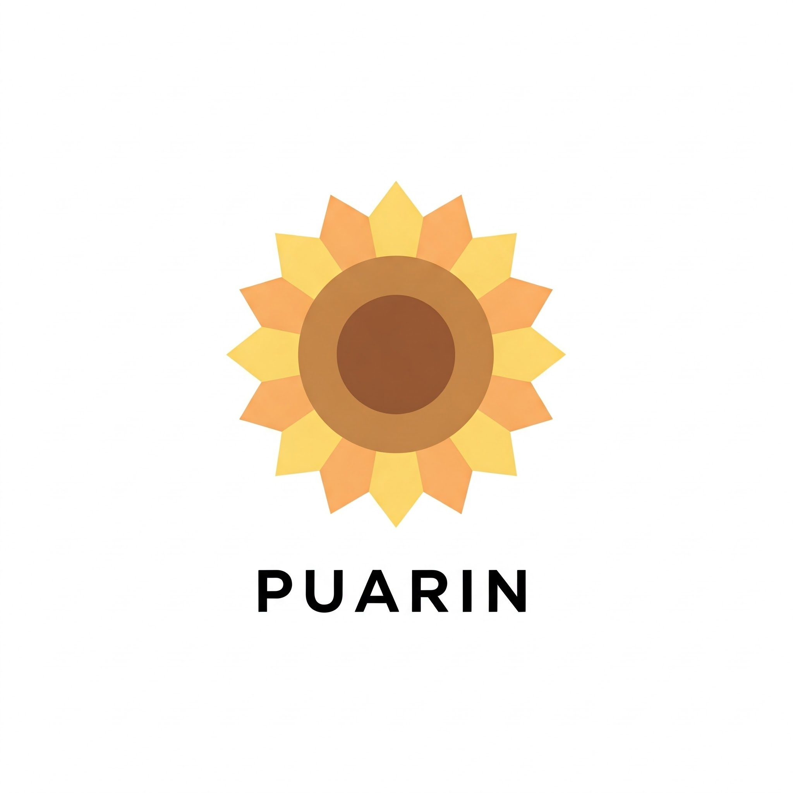

<nz-layout class="app-layout">
  <nz-sider class="menu-sidebar"
    nzCollapsible
    nzWidth="256px"
    nzBreakpoint="md"
    [(nzCollapsed)]="isCollapsed"
    [nzTrigger]="null"
  >
    <div class="sidebar-logo">
      <a href="" target="_blank">
        
      </a>
    </div>
    @if (menuLst && menuLst.length > 0) {
    <ul nz-menu nzTheme="dark" nzMode="inline"  [nzInlineCollapsed]="isCollapsed">
      @for (item of menuLst; track item) {
        <li nz-submenu nzOpen [nzTitle]="item.title" >
          @if (item.children && item.children.length > 0) {
          <ul>
            @for (itemChild of item.children; track itemChild) {
              <li nz-menu-item [routerLink]="itemChild.route" [nzMatchRouter]="true"  [nzMatchRouterExact]="true">
                <a>{{itemChild.title}}</a>
              </li>
            }
          </ul>
          }
        </li>
      }
    </ul>
    }
  </nz-sider>
  <nz-layout>
    <nz-header>
      <div class="app-header">
        <span class="header-trigger" (click)="isCollapsed = !isCollapsed">
          <nz-icon class="trigger" [nzType]="isCollapsed ? 'menu-unfold' : 'menu-fold'" />
        </span>
      </div>
    </nz-header>
    <nz-content>
      <div class="inner-content">
        <router-outlet></router-outlet>
      </div>
    </nz-content>
  </nz-layout>
</nz-layout>
